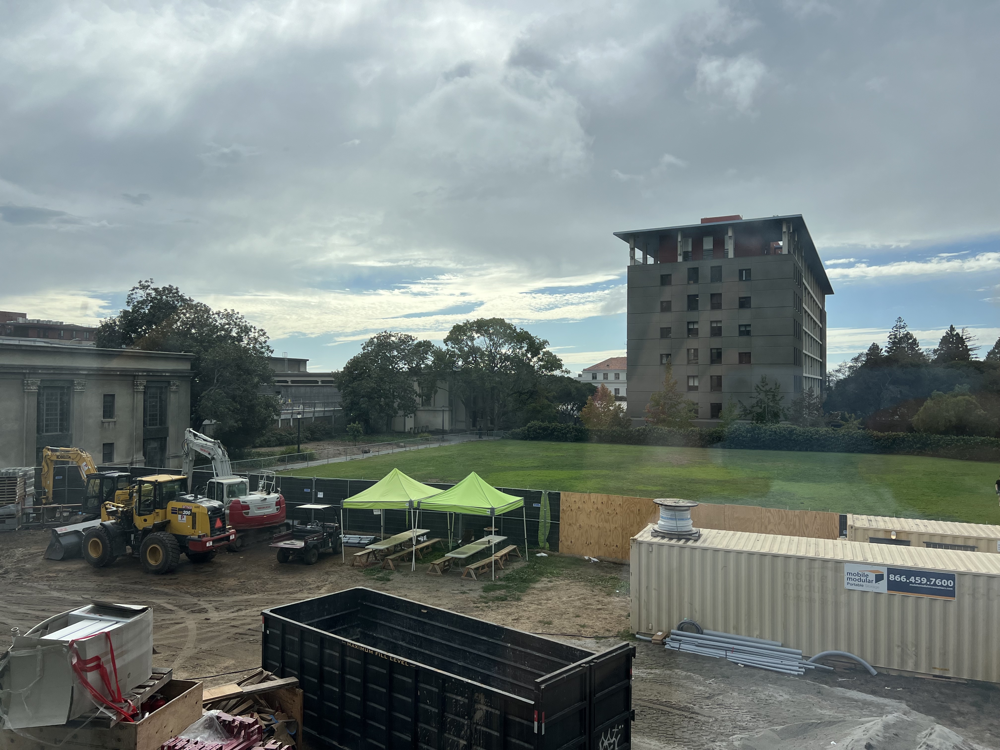
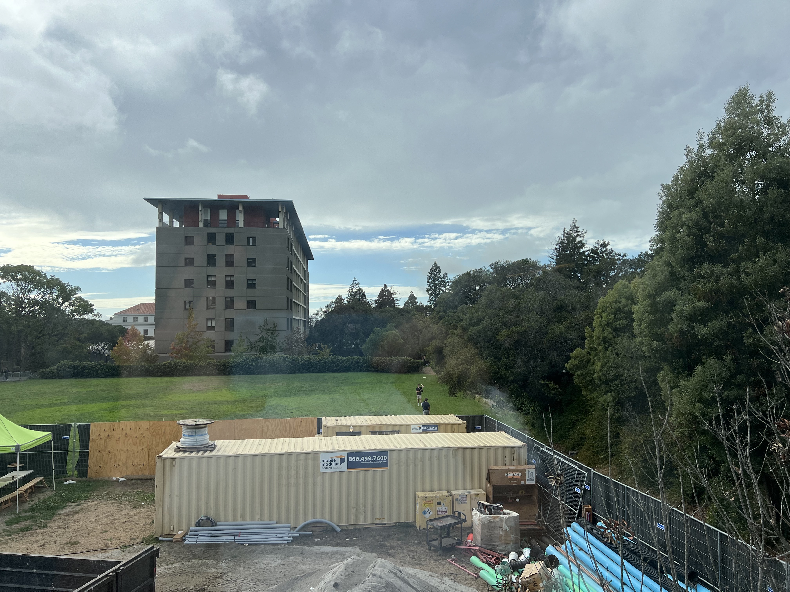

I took three sets of photos: Wurster Hall Stairs, Wurster Hall, and a view from the Music Library.
 Begining with the homography equation from lecture, we have:
$$ \begin{bmatrix} x'w \\ y'w \\ w \end{bmatrix} = \begin{bmatrix} h_{11} & h_{12} & h_{13} \\ h_{21} & h_{22} & h_{23} \\ h_{31} & h_{32} & h_{33} \end{bmatrix} \begin{bmatrix} x \\ y \\ 1 \end{bmatrix} $$$w$ is the homogenous scaling factor. If we multiply two right side matrices, we get the three equations:
$$ \begin{align*} x'w &= h_{11}x + h_{12}y + h_{13} \\ y'w &= h_{21}x + h_{22}y + h_{23} \\ w &= h_{31}x + h_{32}y + h_{33} \end{align*} $$We know from lecture that we can set $h_{33} = 1$ to reduce the number of unknowns from 9 to 8, since the homography is defined up to scale. This gives us:
$$ w = h_{31}x + h_{32}y + 1 $$which we can substitue into the other equations to eliminate $w$:
\begin{align*} x'(h_{31}x + h_{32}y + 1) &= h_{11}x + h_{12}y + h_{13} \\ y'(h_{31}x + h_{32}y + 1) &= h_{21}x + h_{22}y + h_{23} \end{align*}If we isolate $x'$ and $y'$, we directly define the rows of matrix $A$ and vector $b$ for a point correspondence:
\begin{align*} h_{11}x + h_{12}y + h_{13} - h_{31}x x' - h_{32}y x' &= x' \\ h_{21}x + h_{22}y + h_{23} - h_{31}x y' - h_{32}y y' &= y' \end{align*}The vector of our 8 unknown degrees of freedom is:
$$ h = \begin{bmatrix} h_{11} & h_{12} & h_{13} & h_{21} & h_{22} & h_{23} & h_{31} & h_{32} \end{bmatrix}^T $$From above, the system for a single point correspondence is:
$$ \begin{bmatrix} x & y & 1 & 0 & 0 & 0 & -xx' & -yx' \\ 0 & 0 & 0 & x & y & 1 & -xy' & -yy' \end{bmatrix} \begin{bmatrix} h_{11} \\ h_{12} \\ h_{13} \\ h_{21} \\ h_{22} \\ h_{23} \\ h_{31} \\ h_{32} \end{bmatrix} = \begin{bmatrix} x' \\ y' \end{bmatrix} $$We can then stack these rows in the left matrix for additional point correspondences. When this uses more than four point correspondences, we can solve the resulting overdetermined system in with least squares to find the best fitting homography.